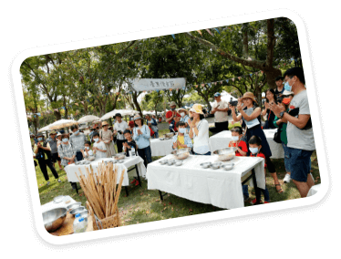
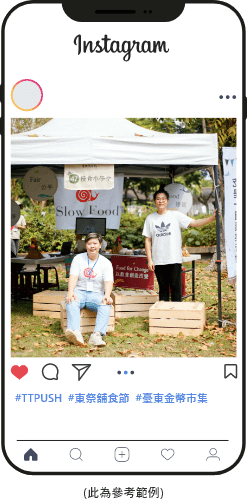

線上
大富翁遊臺東，玩遊戲拿 iPad！成為新會員及推廣大使免費玩

活動時間
110年11月6日（六）00:00 至 12月5日（日）23:59
活動介紹
成為新會員或推薦好友註冊成功，即可獲得遊戲機會乙次；推薦人次數可累加，推薦越多人成為新會員，即可獲得越多遊戲機會！除了有機會獲得臺東在地特選好禮外，還有 Apple 系列商品可以拿！遊戲人人有獎，名額有限，兌完為止。
活動獎項
| 獎項 | 名額 |
|---|---|
| 金幣100枚 | 4,600名 |
| TTPush特約商伴手禮 | 50名 |
| TTPush特約商精選茶品 | 20名 |
| TTPush特約商農特產 TTPush特約商工藝品 |
20名 |
| TTPush特約商飯店餐券 | 6名 |
| Apple AirPods Pro（價值約8,000元） | 2名 |
| Apple Watch SE（價值約8,500元） | 1名 |
| Apple iPad mini（價值約15,000元） | 1名 |
活動備註
獎項發放：110年12月13日（一）至110年12月27日（五）。
實體獎項將於12月13日（一）陸續進行發放，除最終大獎 Gogoro 機車一臺須由本人與團隊約定機車店親自領取外，其餘獎項得獎人皆可選擇於平日上班時間（9:00-18:00）至點點全球臺東辦公室親領（臺東市長沙街172號）或寄送。未於110年12月27日（五）前完成獎項領取，將取消得獎資格。本活動獎品依中華民國稅法規定，得獎者若為中華民國境內居住之個人，中獎金額（價值）超過新台幣 1,000 元以上者，需繳交身分證正反面影本供報稅使用，年度報稅時將計入個人所得。中獎金額（價值）在新台幣 20,010 元以上者，得獎者依法需先繳交 10% 機會中獎稅金，始可領獎。得獎者若非中華民國境內居住之個人，不論得獎者所得之金額，須先就中獎所得扣繳 20% 機會中獎稅金，始可領獎。得獎者若為未成年人，應檢附戶籍謄本並提出法定代理人同意書。若得獎者不願先行繳納本項稅金，視同放棄中獎資格，且不得異議。本活動獎項之款式依主辦單位決定，得獎者不得要求轉換、轉讓或折換現金。
主辦單位保有修改及終止本活動之權利，如有任何變更內容或詳細注意事項將公布於活動頁面，恕不另行通知。參與本活動即表示同意本活動相關規範，未依上述說明辦理領獎手續者，視同放棄中獎資格。
線上
舖食地圖 闖關遊戲 - 28項指定任務，成為 Gogoro 機車得主！
活動時間
110年11月6日（日）00:00 至 12月5日（日）15:00
活動介紹
沒有血腥爭鬥，只有滿滿誘人獎項！
於時間內解鎖當週 #指定任務，獲得階段性好禮！
少一關沒通過，即失去當週獎品及下週遊戲資格。
完成 28 項指定任務及最終通過幸運之繩考驗，
即可把大獎 Gogoro3 電動機車牽回家！
※ 每週任務將公告於活動頁面，請依本頁面公告為準。
活動獎項
| 週次 | 活動時間 | 獎項公告 | 獎項內容 |
|---|---|---|---|
| 第一週 |
11/6（六）00:00 11/14（日）23:59 |
11/15（一） 09:00 |
2,000枚金幣 |
| 第二週 |
11/15（一）00:00 11/21（日）23:59 |
11/22（一） 09:00 |
神秘獎項 待揭曉 |
| 第三週 |
11/22（一）00:00 11/28（日）23:59 |
11/29（一） 09:00 |
神秘獎項 待揭曉 （價值約12,000元） |
| 第四週 |
11/29（一）00:00 12/5（日）16:00 |
12/5（日） 16:30 舖食大會活動現場 |
Gogoro3 機車一臺 （價值約80,000元） |
活動備註
-
獎項發放：110年12月13日（一）至110年12月27日（五）。
實體獎項將於12月13日（一）陸續進行發放，除最終大獎 Gogoro 機車一臺須由本人與團隊約定機車店親自領取外，其餘獎項得獎人皆可選擇於平日上班時間（9:00-18:00）至點點全球臺東辦公室親領（臺東市長沙街172號）或寄送。未於110年12月27日（五）前完成獎項領取，將取消得獎資格。 -
本活動獎品依中華民國稅法規定，得獎者若為中華民國境內居住之個人，中獎金額（價值）超過新台幣 1,000 元以上者，需繳交身分證正反面影本供報稅使用，年度報稅時將計入個人所得。中獎金額（價值）在新台幣 20,010 元以上者，得獎者依法需先繳交 10% 機會中獎稅金，始可領獎。得獎者若非中華民國境內居住之個人，不論得獎者所得之金額，須先就中獎所得扣繳 20% 機會中獎稅金，始可領獎。得獎者若為未成年人，應檢附戶籍謄本並提出法定代理人同意書。若得獎者不願先行繳納本項稅金，視同放棄中獎資格，且不得異議。本活動獎項之款式依主辦單位決定，得獎者不得要求轉換、轉讓或折換現金。
-
主辦單位保有修改及終止本活動之權利，如有任何變更內容或詳細注意事項將公布於活動頁面，恕不另行通知。參與本活動即表示同意本活動相關規範，未依上述說明辦理領獎手續者，視同放棄中獎資格。
任務簡介
| 週次 | 任務1 | 任務2 | 任務3 | 任務4 | 任務5 | 任務6 | 任務7 |
|---|---|---|---|---|---|---|---|
| 第一週 |
任務1 使用TTPUSH「線上選購」功能至「豚將拉麵」進行消費。 步驟1：打開TTPUSH APP，點選下方選單「優惠地圖」 任務2 使用TTPUSH「線上選購」功能至「川牛木石亭」進行消費。 步驟1：打開TTPUSH APP，點選下方選單「優惠地圖」 任務3 使 TTPUSH「線上選購」功能至「晟心餐飲庇護工場」進行消費。 步驟1：打開 TTPUSH APP，點選下方選單「優惠地圖」 任務4 使用 TTPUSH「線上選購」功能至「王子豬排」進行消費。 任務5 加入 TTPUSH 官方 LINE 帳號並綁定 TTPUSH 帳號！ 任務6 於11/13（六）餐車小聚地點，使用 TTPUSH 官方 LINE 帳號進行入場實聯制，出示畫面給現場工作人員進行審核，完成即可通關。 任務7 於11/13（六）餐車小聚地點，按讚 TTPUSH 及 TTFREE 粉絲專頁，出示畫面給現場工作人員進行審核，完成即可通關。 ※ 任務期限：11/6（六）00:00-11/14（日）23:59。 |
||||||
| 週次 | 任務8 | 任務9 | 任務10 | 任務11 | 任務12 | 任務13 | 任務14 |
| 第二週 |
本週任務待揭曉。 |
||||||
| 週次 | 任務15 | 任務16 | 任務17 | 任務18 | 任務19 | 任務20 | 任務21 |
| 第三週 |
本週任務待揭曉。 |
||||||
| 週次 | 任務22 | 任務23 | 任務24 | 任務25 | 任務26 | 任務27 | 任務28 |
| 第四週 |
本週任務待揭曉。 |
||||||
線上
不花錢花金幣完全攻略！圖文徵件
活動時間
110年11月6日（日）00:00 至 12月19日（日）23:59
獎項公告
110年12月24日（五）
活動規則
分享你的金幣使用攻略，最高人氣者將獲得最新出爐的 iPhone13 手機！上傳自己在 TTPush 特約商家消費的照片至少兩張（須含一張金幣使用紀錄截圖）至 Instagram，並寫下消費的商家名稱、交易日期、交易幣額及20字以上短心得，標記 #TTPUSH 及 #東岸舖食節 #臺東金幣市集，完成圖文投稿後，就能開始向親朋好友拉票囉！
活動獎項
Apple iPhone 13 128GB（一名）

活動備註
-
本活動徵件作品需供主辦單位後續使用。
-
活動審核：未避免讚數相近問題，主辦單位將於110年12月19日（日）23:00 將先統計讚數前10名參賽者，於110年12月20日（一）00:00 活動截止當下，立即進行各投稿者讚數截圖動作。
-
獎項發放：110年12月27日（一）至12月31日（五）。
得獎人可選擇於平日上班時間 9:00-18:00 至點點臺東辦公室（臺東市長沙街172號）親領或寄送。未於110年12月31日（五）前完成獎項領取，將取消得獎資格。 -
本活動獎品依中華民國稅法規定，得獎者若為中華民國境內居住之個人，中獎金額（價值）超過新台幣 1,000 元以上者，需繳交身分證正反面影本供報稅使用，年度報稅時將計入個人所得。中獎金額（價值）在新台幣 20,010 元以上者，得獎者依法需先繳交 10% 機會中獎稅金，始可領獎。得獎者若非中華民國境內居住之個人，不論得獎者所得之金額，須先就中獎所得扣繳 20% 機會中獎稅金，始可領獎。得獎者若為未成年人，應檢附戶籍謄本並提出法定代理人同意書。若得獎者不願先行繳納本項稅金，視同放棄中獎資格，且不得異議。本活動獎項之款式依主辦單位決定，得獎者不得要求轉換、轉讓或折換現金。
-
主辦單位保有修改及終止本活動之權利，如有任何變更內容或詳細注意事項將公布於活動頁面，恕不另行通知。參與本活動即表示同意本活動相關規範，未依上述說明辦理領獎手續者，視同放棄中獎資格。
實體
餐車小聚 ・ 金幣迷你市集
悠閒的午後時光，就要吃點小點心解解饞！
TTPUSH 集結臺東在地的優質餐車於11月份每週六進行聯合快閃擺攤，現場除了有美食攤商讓你盡情花金幣，也有趣味遊戲可以打發時間，使用 TTFree WIFI 連線及消費滿額還能拿到金幣回饋，繼續參加下一場的活動！
※ 現場交易活動需透過金幣進行，金幣不足方能使用現金、紙本五倍卷補差額。
（依現場店家收取款方式為主）
活動時間/地點
110年11月6日（六）13:00-17:00 / 南京路市民廣場
110年11月13日（六）13:00-17:00 / 南京路市民廣場
110年11月20日（六）13:00-17:00 / 鐵花新聚落
110年11月27日（六）13:00-17:00 / 臺東縣立體育館（西門前）
活動流程
| 時間 | 內容 | 活動介紹 |
|---|---|---|
|
13:00 至 17:00 |
TTFREE 連線送金幣 | 成為 TTPUSH 會員並連線至現場指定 TTFREE 熱點，即可獲得金幣 1,000 枚（每日限 400 名）。 |
| 2:1 消費回饋 | TTPUSH 會員於行動餐車使用臺東金幣折抵滿額，可獲得等值金幣枚數回饋贈送。同場同額度每人只能領一次，同場最高可領 1,250 枚金幣回饋。（名額有限，兌完即止） | |
| 彈珠台 | 在現場活動區，拍照打卡並標記 #東岸舖食節 上傳至個人Facebook 或 Instagram（設定公開分享），即可獲得免費玩復古彈珠台一次，每人最多兩次。 | |
| 跳格子 | 11/06、11/13 場地限定，民眾可自由玩樂。 |
實體
舖食大會 ‧ 臺東金幣市集
一年一度的「東岸舖食節」來到尾聲，壓軸登場的「舖食大會·臺東金幣市集」號召 30 間 TTPUSH 優質特約商家齊出動，不論正餐、小點、飲品通通有！當日除了 TTFree 連線贈金幣外，也有各式活動可以讓你拿金幣、抽好禮，搭配現場精彩的音樂表演和趣味遊戲，要讓你美食吃飽飽、金幣賺飽飽、心情好好好～度過最愉快的周末！
活動日期
110年12月4日（六）10:00-17:00
110年12月5日（日）10:00-17:00
活動地點
南京路市民廣場
活動流程
| 110年12月4日（六）11:00-17:00 | 110年12月5日（日）11:00-17:00 | ||
|---|---|---|---|
| 10:00 | 開放入場 | 10:00 | 開放入場 |
| 11:00 | 有獎徵答 | 11:00 | 有獎徵答 |
| 11:30 | 音樂表演：余文秀 | 12:00 | 尋找指定物拿賓果卡 |
| 13:00 | 有獎徵答 | 13:00 | 有獎徵答 |
| 14:00 | 尋找指定物拿賓果卡 | 13:30 | 舞台表演：阿丹玩球球 主唱 |
| 14:30 | 音樂表演：安懂 | 14:40 | 賓果樂透開獎 |
| 15:40 | 賓果樂透開獎 | 15:30 |
今日消費幸運兒 （處長頒獎） |
| 16:30 | 今日消費幸運兒 | 16:00 |
舖食地圖－第28項最終任務 GOGORO幸運之繩 （處長頒獎） |
| 整天 |
真人大富翁競賽 （沙包投擲、打畫片、圈圈叉叉、吹氣球、套圈圈、指定任務等） 第一輪：10:30、第二輪：11:45 第三輪：13:00、第四輪：14:15、決賽：15:30 大型疊疊樂 復古彈珠台 本日財運扭蛋 TTFREE 連線贈金幣 |
16:30 |
舖食地圖－第28項最終任務頒獎 （縣長頒獎） |
| 整天 |
真人大富翁競賽 （沙包投擲、打畫片、圈圈叉叉、吹氣球、套圈圈、指定任務等） 第一輪：10:30、第二輪：11:45 第三輪：13:00、第四輪：14:15、決賽：15:30 大型疊疊樂 復古彈珠台 本日財運扭蛋 TTFREE 連線贈金幣 |
||
活動介紹
-
活動報到－TTFREE 連線贈金幣
成為 TTPUSH 會員並連線至現場 TTFREE 熱點，獲得金幣 2,000 枚（每日1,000名）。
-
趣味遊戲拿金幣－真人大富翁闖關競賽
每格格子皆有不同的遊戲內容，如沙包投擲、圈圈叉叉、套圈圈、花金幣購物、機會命運等，供民眾進行闖關挑戰。競賽採預約報名制，每天將有 4 個時段進行初賽，每時段最多開放 6 個人穿上趣味食物道具服進行挑戰，每階段獲勝者將獲得 10,000 枚金幣及決賽資格，最終獲勝者可得到金幣 50,000 枚（每日1名）。
-
免費遊戲體驗
現場有大型木製疊疊樂、圈圈叉叉、跳格子等復古童年遊戲可供自由玩樂。
分享「東岸舖食節」Facebook 粉絲專頁置頂貼文，可至服務台玩復古彈珠台一次。
追蹤「東岸舖食節」Instagram，可至服務台玩財運扭蛋機一次。 -
舞台互動－尋找威利
找到指定物品拍照上傳公開分享至個人 Facebook，出示畫面給服務台工作人員，審核通過即可換取一張賓果卡。
-
舞台互動－賓果樂透
除了透過尋找威力外，在現場活動區拍照打卡上傳個人 FB 或 IG 設定公開分享即可獲得一張賓果卡。主持人和工作人員將於指定時間在舞台上轉出號碼，最快連成三條線者，即可獲得 50,000 枚金幣（每日1名）。
-
舞台互動－有獎徵答
於指定時間在舞台上進行有獎徵答互動環節，答對 TTFree、TTPush 相關問題，即可獲得金幣 1,000 枚（每日6名）。
-
尋找金幣 QRcode 千枚金幣大放送
熱情參與直到活動尾聲的民眾，需要愛的鼓勵！現場送金幣。
-
今日消費幸運兒
於 12/4、12/5 活動中消費單筆滿 3,000 枚金幣，即可獲得抽 Apple Watch 的機會（每日1名）。抽獎名單將統計至獎項公告前一小時，12/4（六）於 15:30 截止、12/5（日) 14:30 截止），如得獎者不在場，將重新抽出幸運兒。
-
鋪食地圖 闖關活動 得主
在 12/5 活動尾聲，將請上一關通關者上台，進行最後一關「幸運之繩」的挑戰，每條繩子都有獎項，包含 Gogoro 和 Switch，每人選定一條繩子後，在同一個時間點，與全場民眾共同揭曉最大獎得主。
防疫規範
-
活動入口設置紅外線酒精自動感應測溫噴霧機，供民眾進行體溫測量及消毒，並配置專人進行管制，引導民眾量體溫、消毒及實聯制登記。
-
活動全程應全程佩戴口罩，若有飲食需求，能與不特定對象保持社交距離或有適當阻隔設備，得暫時脫下口罩。活動現場將有專人巡視，勸導民眾遵守相關規定。
-
疫情態勢為不可控因素，本活動將依照中央流行疫情指揮中心最新防疫公告為準。